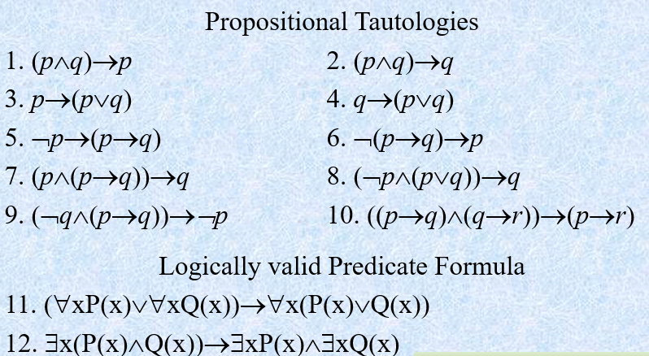

问题求解（一）总结 PART I
This term we learned DH, UD and a little part of ES.
DH: we learned Chapter 1-7, 9-10 in class, and left Chapter 8, 11-15 out of class.
UD: we learned Chapter 1-11, 14-18, 21-24, 27-28 in class and left Chapter 12-13, 19-20, 25-26, 29 out of class.
If possible, I decide to learn the left chapters on my own and I will also mark my notes down here.
Week 1 为什么计算机能解题
Concepts
DH Chapter 1: Introduction and Historical Review
Computers have many "switchs" or bits, flipped by itself. Computers can directly execute only a small number of extremely trivial operations. Process(algorithms) transform trivial operations on bits into the great abilities the computers have.
Input, Output, and Algorithm. Software and Hardware. Programs are well-written algorithms. Softwares are programs written in a special programming language.
Histories of computers. You might better learn them from this video.
Some limitations(differences between human and computerized intelligence).
Levels of detail: how precise an algorithm's elementary instructions need to be. Elementary instructions must be clear and precise.
Abstraction, different levels of abstraction. At a higher level, information about lower level isn't needed to be considered.
The length of algorithms are not necessarily changed for different scale of the problem.
Notes below are chapters not metioned in classes.
An algorithm must be suitable for infinite number of inputs. Inputs have to be legal(i.e. satisfying some specifications of the algorithms)
Algorithms are solutions to computational/algorithmic problems. These problem can be seen as "black box"(a function from (any legal) inputs to outputs), and apropriate algorithms are specific suitable content of the black box.
Algorithmic problems keep illegal inputs away, and algorithms deal with legal inputs only.
Basic actions must be precise and unambiguous, and take bounded amounts of time and resources.
An algorithmic problem = input set characterization + output specification(or to say, the function from input to output).
UD Chapter 1: The How, When and Why of Mathematics.
- How to solve mathematical problems? Polya's method: Understanding the problem, Divising a plan, Carrying out the plan, Looking back.
Week 2 什么样的推理是正确的
Concepts
UD Chapter 2: Logically Speaking
Statements are sentences that are true or false, but not both. Symbolic statements are called statement forms.
The negation of \(P\), denoted by \(\neg P\).
The disjunction of \(P\) and \(Q\), denoted by \(P\vee Q\).
The conjunction of \(P\) and \(Q\), denoted by \(P\wedge Q\).
The implication, \(P\) implies \(Q\), denoted by \(P\to Q\). \(P\) is called antecedent and \(Q\) is called conclusion. \(P\to Q\) is equivalent to \(\neg P\vee Q\).
The equivalence, \(P\leftrightarrow Q\), and it is equivalent to \((P\rightarrow Q)\wedge (Q\rightarrow P)\).
Things above are called connectives.
Tautology, contradiction and contingency. \(P\leftrightarrow Q\) is a tautology means \(P\) and \(Q\) are equivalent.
Use truth table to judge when a statement form is true, and to prove a statement form is a tautology...
Here are some tautologies. \[ \begin{aligned} &\textit{DeMorgan's Laws}&\neg(P\vee Q)\leftrightarrow (\neg P\wedge \neg Q) \\ & &\neg(P\wedge Q)\leftrightarrow (\neg P\vee \neg Q) \\ \\ &\textit{Implication and} &(P\rightarrow Q)\leftrightarrow (\neg P\vee Q) \\ &\textit{its negation} &\neg(P\rightarrow Q)\leftrightarrow (P\wedge \neg Q) \\ \\ &\textit{Double negation} &\neg(\neg P)\leftrightarrow P \end{aligned} \]
UD Chapter 3: Introducing the Contrapositive and Converse
Paraphrase statements - use tautologies.
Some tautologies: \[ \begin{aligned} &\textit{Distributive property} &(P\wedge(Q\vee R))\leftrightarrow ((P\wedge Q)\vee (P\wedge R)) \\ &&(P\vee (Q\wedge R))\leftrightarrow ((P\vee Q)\wedge(P\vee R)) \\ \\ &\textit{Associative property} &(P\wedge(Q\wedge R))\leftrightarrow ((P\wedge Q)\wedge R) \\ &&(P\vee(Q\vee R))\leftrightarrow ((P\vee Q)\vee R) \\ \\ &\textit{Commutative property} &(P\wedge Q)\leftrightarrow(Q\wedge P) \\ && (P\vee Q)\leftrightarrow (Q\vee P) \end{aligned} \]
Contrapositive of an implication. They are equivalent.
Converse of an implication.
Inverse of an implication.
UD Chapter 4: Set Notation and Quantifiers
Define a set: axiomatic statements(ZFC system).
Basic set notations.
In statements: \(x\) means variables; "for all" or \(\forall\), "there exists" or \(\exists\) are called (universal/existential) quantifier.
\(\forall x, p(x)\) is true iff for all \(x\) we find \(p(x)\) is true. To bound the range of \(x\), we use \(\forall x, (x\in A\rightarrow p(x))\). Here we use the characteristic of implication. If we consider \(x\) out of the range, the implication will always be true.
\(\exists x, p(x)\) is true iff there exists an \(x\) such that \(p(x)\) is true. To bound the range of \(x\), we use \(\exists x, (x\in A\wedge p(x))\). If we consider \(x\) out of the range, the conjunction will always be false.
For negation of quantifiers: \(\neg (\forall x, p(x))=\exists x, \neg p(x)\); \(\neg(\exists x, p(x))=\forall x, \neg p(x)\).
Sometimes we can omit universal quantifiers.
With quantifiers, the method to find a implication's contrapositive, converse and inverse doesn't change.
Extended content
Logical reasoning (Week 2 slides P24). There are \(k\) antecedents \(A_1, A_2, \cdots, A_k\) and one conclusion \(B\). To assure that our reasoning is correct, we need to prove \((A_1\wedge A_2\wedge\cdots\wedge A_k)\to B\) is a tautology and vice versa.
Modus Ponens. (Week 2 slides P25) \(p, p\rightarrow q \Rightarrow q\).
Some tautologies. (Week 2 slides P27)
View the picture

(Week 2 slides P28) US, UG, ES, EG(universal/existential specify/generalize).
(Week 2 discussion P16) use one kind of connective to represent all kinds of connectives.
Let \(A\circ B=\neg(A\vee B)\), then \[ \begin{aligned} \neg A &=A\circ A \\ A\wedge B &= (A\circ A)\circ (B\circ B) \\ A\vee B &= (A\circ B)\circ (A\circ B) \end{aligned} \]
Week 3 常用的证明方法
Concepts
UD Chapter 5: Proof Techniques
- Direct Poorf.
- Proof by Contradiction.
- Proof in Cases.
- Conjecture(out of intuition, generalization of observations).
- Have proof, then a conjecture turns into a theorem.
- Prove that something is not true.
- Find an example of something that satisfies the hypotheses of the conjecture, but not the conclusion.(a counterexample)
- The method to prove a statement with "iff".(break it into two parts)
- Definition of divide.
UD Chapter 18: Mathematical Induction
- Definition of mathematical induction, and the difference with conventional induction.(Can they be both used to prove a conjecture?)
- Principle of mathematical induction and its proof(the consequence of well-ordering principle of \(\mathbb N\), use a proof by contradiction).
- Usage of mathematical induction: Two steps: the base, and the induction.
- Notions of \(\sum\) and \(\prod\).
- Use induction to define functions(recursively). Importantly:
Recursion theorem to assure the existence and
well-defined quantity of the function and learn the proof of the
theorem. You'd better learn Chapter 10 first to understand the proof.
- In short, two steps(existence and uniqueness), construct the smallest relation to satisfy its uniqueness(Take the intersection).
- First, prove that there is a set \(\mathbb N\times X\) satisfies, we can take their intersection as \(g\).
- Second, prove that \(g\) is a function and we need to prove two conditions for a function. To prove condition I, we use mathematical induction. To prove condition II, we use mathematical induction too(here, in the base step and the induction step, we both need to use the proof of contradiction, according that \(g\) is the smallest).
- Third, we need to prove the uniqueness of \(g\), we can use mathematical induction, too. Or, accroding to the book, we can also use the well-ordering principle of \(\mathbb N\).(In fact, these two are equivalent)
- Definition of factorial.
ES Section 24: The Pigeonhole Principle
- Content: if \(A\) and \(B\) are finite functions and \(|A|> |B|\), then there can be no one-to-one function \(f:A\to B\).
- if \(A\) and \(B\) are finite functions and \(|A|<|B|\), then there can be no onto function \(f:A\to B\).
- Cantor's Theorem: \(f:A\to \mathcal P(A)\) is not onto.
- The smallest infite sets have the same size as \(\mathbb N\), or the size is \(\aleph_0\).
Extended content
- Week 3 slides, the logical bases of the proof techniques.
- Week 3 slides, four rules(UG, US, EG, ES).
- Week 3 slides, some tautologies with quantifiers.
- Week 3 slides, paradigms. (To learn this, you can use the book discrete mathematics and its applications(KR))
Week 4 基本的算法结构
Concepts
DH Chapter 2: Algorithms and Data - PART I & II
- An algorithm is excuted by a processor. It does things according to the basic actions of the algorithm.
- Control(-flow) Structures.
- Direct sequencing (do A, and then do B).
- Conditional branching (if A do B, (otherwise do C)).
- Iterations(looping constructs), let an algorithm of fixed length
describe processes that can grow very long.
- Bounded iteration: Do A exactly N times.
- Conditional iteration(Unbounded iteration): while Q do A.
- Combining Control Structures: Sequencing, branching and iteration
can be interleaved and nested within each other.
- Nested loops(outer loop, inner loop).
- Sorting. Bubble Sort.
- Goto Statement.
- Diagrams for Algorithms.
- Flowcharts. Advantages and disadvantages.
- Subroutine/Procedure with parameters to be invoked/called.
- Economy.
- Abstraction ability. Make black boxes(reduce the details we need to consider). We can devise high-level algorithm first and fill in the subroutines later("top-down design").
- Recursion.
- The Towers of Hanoi.
- Depth of recursion.
- Minimal sets of control structs.(For example, sequencing, conditional branching and unbounded loop)
Extended content
- Week 4 slides: iteration invariants.
Week 5 数据与数据结构
Concepts
DH Chapter 2: Algorithms and Data - PART III & IV
Data Structure
- Data. Objects manipulated by an algorithm: lists, words, texts, "noted numbers", "pointers"..., constitute inputs, outputs and intermediate accessories.
- Data Type. Numbers, words, ... It's good to keep types separate, because each date type admits its own special set of allowed operations/actions.
- Data structures, and the operations upon them, organize the data items in ways that enable it to do whatever it should do when the processor gets there.
Variables
- Can contain different values at different times.
- As memory/storage in the algorithm.
Vectors/Lists/One-dimesional arrays
- Refer to many elements in a uniform way.
- A data structure closely related to a loop as a control structure.
Tables/Matrixs/Two-dimesional arrays
- Nested loop.
- Arranged in a precise rectangular format. Or use a vector whose elements themselves point to vectors of varying length.
Queues and stacks
- Sometimes we do not need the full power provided by indices. It is beneficial for algorithmic clarity. We hide the details. (Also a kind of abstraction)
- Queue. FIFO list.
- Stack. LIFO list.
Trees/Hierachies
- Structure and some terminologies.
- Treesort.
- Trees correspond to recursive routines.
- Treesort - self-adjustment idea.
Databases
- A very large "pool" of data. Contain many differet kinds of data.
- Querying a database - a difficult task. So we need a good organization of database for clarity and efficiency.
- Some models:
- The relational model.
- The hierachical model.
- The object-oriented databases.
- Data mining.
- Data warehouse.
- Knowledge base.
Week 6 算法的描述
Concepts
DH Chapter 3: Programming Languages and Paradigms - PART I
- Algorithms must be written in an unambiguous and formal fashion. So we use a programming language, in which we write programs.
- Machine languages. High-level programming languages indeed come from many levels of abstraction.
- Rigid syntax.
- Syntax definition: use BNF.
- Precise Semantics.
- Usually hard to find semantic problems.
Extended content
- Week 6 slides: von Neumann structure.
- Week 6 slides: Regular expression, BNF, DFA, NFA, phrase-structure grammar, regular grammar, context-free grammar...